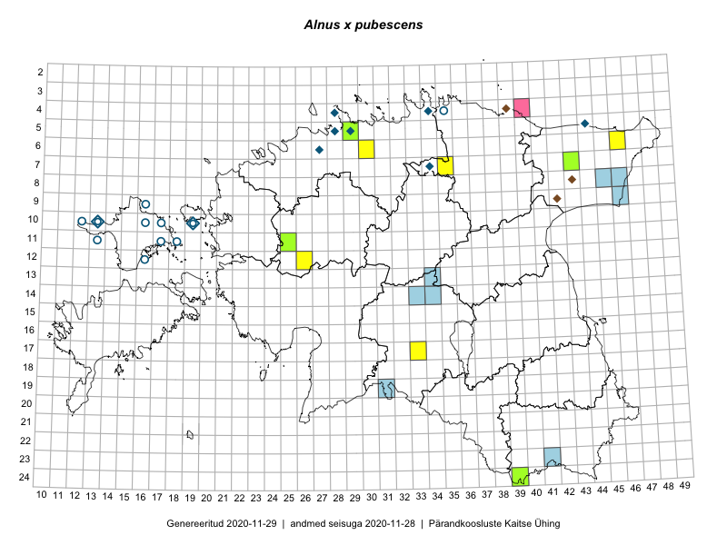

Alnus x pubescens
Uuendatud: 2016-12-01
Kaardile koondatud taksonid: Alnus x pubescens Tausch

Kaart põhineb 7 kirjel.
Viited andmebaasikirjetele
- Toomas Kukk, Tiit Hallikma, Meeli Mesipuu: 2015-05-31: 06-46: ala
- Toomas Kukk, Peedu Saar: 2014-09-10: 07-43: ala
- Toomas Kukk, Eerik Leibak: 2016-07-20: 17-33: ala
- Toomas Kukk, Eerik Leibak: 2016-07-20: 17-33: GPS punkt
- Toomas Kukk, Sander Laherand, Nele Jõessar: 2016-07-27: 07-35: ala
- Kadi-Liis Kesler, Tiina Elvisto: 2015-07-30: 06-46: ala
- Kadi-Liis Kesler, Tiina Elvisto: 2015-05-26: 06-30: ala